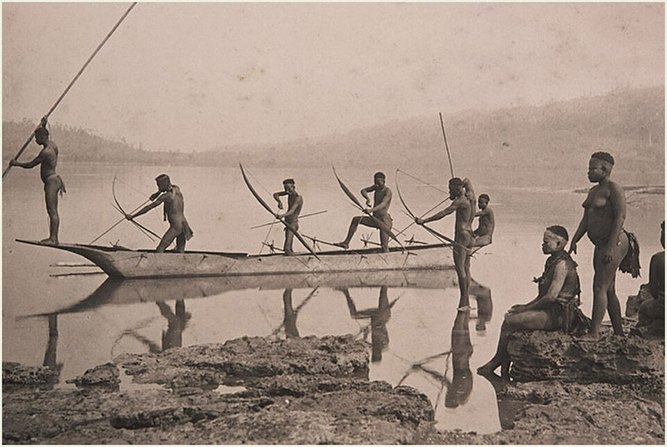
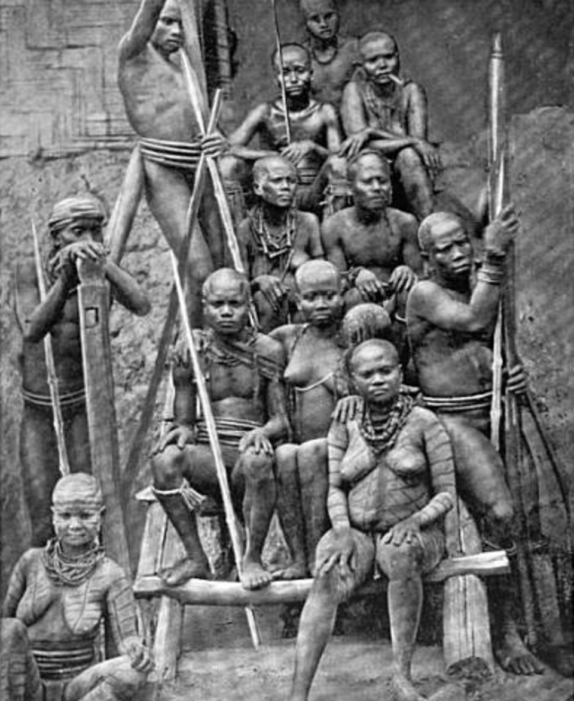

Imagine a world where the last 30,000 years of human history—the rise of empires, the invention of the steam engine, flight into space, and the creation of the internet—simply never happened. North Sentinel Island in the Bay of Bengal is not just a piece of land; it is a glitch in the matrix of modern civilization. Its inhabitants, the Sentinelese, have achieved something no other society has: they have successfully fended off the entire globalized world using nothing but wooden bows and an uncompromising will to be left alone. To them, we are not "civilized neighbors," but "alien invaders" from a world they chose to reject before the first pyramids were even built.
The most incredible proof of their ancient mastery occurred during the Indian Ocean tsunami in 2004. While modern satellite systems and coastal sensors failed to save hundreds of thousands of lives, the Sentinelese didn't need a single electronic device. When the ocean began to recede—a terrifying sign of the coming wall of water—they didn't run to the exposed reef to collect fish as many others did. They read the "breath of the sea." Using instincts honed over thirty millennia, the entire tribe retreated to the high ground in the island's interior long before the first wave hit. They didn't just survive one of the largest natural disasters in history; they did so with zero casualties, while the "modern" world watched the catastrophe on television in horror.
The most mystical fact is their survival in 2004. Scientists believe that the Sentinelese hear "infrasound"—low-frequency vibrations of the earth that humans usually do not perceive. When the tectonic plates shifted, they felt it not only with their feet but with their entire bodies. While the whole world waited for data from sensors, the Sentinelese simply moved deep into the forest because their brains are tuned to the vibrations of the planet. For them, the island is not just land under their feet, but a living organism with which they exist in constant symbiosis.
Although the Sentinelese live in a Stone Age reality, they are masters of adaptation. They do not mine ore, and they have no furnaces, yet their arrows are tipped with deadly metal. This is their only "dialogue" with our world. Over the decades, several large vessels, such as the Primrose, have run aground on their sharp coral reefs. Instead of seeing these wrecks as symbols of a superior culture, the Sentinelese treated them as quarries. They cut rusty steel from the hulls, subjecting it to cold forging with heavy stones until it turns into razor-sharp arrowheads. They have turned the debris of our industrial age into weapons designed to keep us away from their home.


In 1981, the cargo ship Primrose ran aground off the coast of the island. For a week, the sailors sat on the deck, watching as hundreds of dark-skinned warriors built huge rafts on the shore. The captain radioed: "They are preparing to attack." Fortunately, a helicopter managed to pick up the crew before the rafts were launched. This ship is still rusting there today, and it has been the primary source of iron for the tribe for the last 40 years. The Sentinelese made a technological leap from the Stone Age straight into the Iron Age, skipping the Bronze Age, simply by dismantling this ship for parts.
One of the mysteries of this tribe is their relationship with fire. Anthropologists believe that the Sentinelese might be the last people on Earth who do not know how to produce fire from scratch. They are "fire-preservers," not "fire-makers." They wait for a strike from the sky—lightning hitting a tree is a gift from the gods for them. They collect glowing embers and store them in specialized clay pots, guarding the flame day and night for years. If the fire in a family goes out, it is a tragedy; they must wait for the next storm for nature to grant them light and heat once again. This makes their life incredibly fragile and dependent on the elements.
The hostility of the Sentinelese is often perceived as "savagery," but from their point of view, it is the highest form of biological defense. They have no immunity to the most basic human diseases. A common cold, a flu virus, or measles—things we treat with a single pill—would become biological weapons of mass destruction for them. Every arrow they fire at a low-flying helicopter or a stray fishing boat is a desperate act of self-preservation. They are guarding the last truly "pure" human gene pool on the planet. Contact with us literally means the death of the entire nation for them.
The Indian government eventually accepted the inevitable: the Sentinelese cannot be "civilized" without being destroyed. A 5-mile exclusion zone has been established around the island, patrolled by the navy. This is a silent treaty between two worlds that can never meet. The island remains a dark green emerald of forest, where people still hunt with harpoons and gather wild honey, ignoring the satellites passing silently overhead. They are the "ghosts of the bay," a reminder that some parts of the human soul are not for sale to the modern world and do not need its "progress."
Their dwellings are temporary shelters without walls, which indicates a nomadic lifestyle within the island itself. They do not build fortresses of stone because the entire island is their fortress. They feed mainly on the fruits of the forest, wild boars, and fish, which they strike with spears in the shallows. They have no supreme leader in our sense, no taxes, and no prisons. Their law is the survival of the group. Anyone who violates the boundaries of their world automatically becomes an enemy because, beyond their beach, begins a void they do not wish to know.
One of the biggest problems during contact attempts in the 70s and 90s was the complete lack of linguistic connection. Indian anthropologists brought representatives of the Onge tribe—the closest neighbors of the Sentinelese from other Andaman Islands. Theoretically, their languages should have had common roots. However, when the boats approached the shore, it turned out that the Onge did not understand a single word of what the Sentinelese were shouting. This means that the tribe has lived in total isolation for so long that their language has mutated beyond recognition or developed along a completely unique path. It is a "linguistic dead end"—linguists cannot classify their speech, as they do not have a single recorded sentence, other than militant cries.
Many wonder: where does so much anger toward strangers come from? History provides a grim answer. In 1880, British naval officer Maurice Vidal Portman landed on the island with an armed detachment. They found abandoned huts and eventually captured an elderly couple and four children. The prisoners were taken to Port Blair "for study." The old people died almost immediately from diseases to which they had no immunity. Portman, fearing the consequences, returned the children to the island, leaving them on the beach with a pile of gifts. It is quite likely that this very incident became a "genetic scar" for the tribe: the children told stories of the death of their parents and of white people who bring doom. Since then, any boat on the horizon has been a harbinger of death for them.
The Sentinelese are excellent mariners within their reef. Their boats are outrigger canoes (with a side float for stability). They are very narrow and do not allow for going into the open ocean, as they easily capsize in large waves. But in the lagoon protected by the reef, they masterfully maneuver them using long poles rather than oars. This further confirms their philosophy: they use the ocean as a garden, but never try to cross it. The island is their entire cosmos.
An interesting fact from expedition reports: when anthropologists left coconuts on the shore (which do not grow on the island), the Sentinelese ate them with pleasure but never tried to plant them. They eat the offering here and now. This is a typical mindset of "pure" hunter-gatherers: they do not plan a harvest for years ahead; they live in the moment. Any object they cannot understand or use immediately (like mirrors or dolls left by scientists), they either break or bury in the sand as something unclean or dangerous.
The Sentinelese are classic hunter-gatherers. They have no gardens, no domestic animals (not even dogs), and no grain stores. Their entire diet depends on what the island "gives" them today. The main source of protein is wild boars, which are found in abundance in the island's forests. Hunting them is conducted in groups using long spears. The second important part of the menu is seafood. The Sentinelese are virtuoso fishermen. They wade hip-deep into the water during low tide and strike fish with harpoons with incredible accuracy. They also collect mollusks, crabs, and huge sea turtles, whose eggs, buried in the sand on the beach, are a true delicacy and an energy bomb for the tribe.
Women and children of the tribe are responsible for plant-based food. They gather wild fruits, roots, and tubers. A special place is held by wild honey. To reach the honeycombs, the Sentinelese use smoke from certain herbs, which calms the bees. Interestingly, they know the properties of almost every plant on the island: some leaves are used as blood-stopping patches, others as natural repellents against clouds of tropical mosquitoes. Their bodies are covered with scars, but not from diseases—rather from ritual cuts and the thorny thickets of the jungle through which they move with the grace of predators.
Researchers observing the Sentinelese from boats noticed a striking thing: the warriors are able to see the movement of small fish or crabs in the murky surf water at a distance of dozens of meters. This is not just good eyesight—it is the result of adaptation. Like the sea nomads of the Bajau, the eyes of the Sentinelese become accustomed to extreme conditions from childhood. They have phenomenal visual accommodation: they can constrict the pupil so much that the eye turns into a pinhole camera. This allows them to see underwater as clearly as on land, ignoring the glare and distortion of light.
If you have ever tried to walk barefoot on a coral reef, you know it is like walking on broken glass. The Sentinelese, however, run across them at full speed during the hunt. Their feet are a unique engineering object. The skin on the soles is so thick and rough that it replaces any footwear for them, while the foot remains incredibly flexible. Their toes are spread wider than those of a modern human, which gives them perfect stability on slippery stones and sand. In fact, their feet function like off-road tires.
Many wonder: how has a tribe of 100-200 people not died out from inbreeding over 30,000 years? The answer lies in harsh natural selection. In island conditions, any genetic defect means the child simply will not live to reproductive age. Nature itself has "cleansed" their gene pool. They have no excess weight, no diabetes, and no heart diseases. Judging by photos from helicopters, even the elderly among them look lean and muscular. They are the biological standard of what Homo Sapiens was at its peak form.
Their skin is one of the darkest in the world (the "negrito" type), which is an ideal protection against the scorching sun of the Bay of Bengal. They do not need sunscreens; their melanin absorbs 99% of ultraviolet radiation. Moreover, scientists noticed that there are almost no traces of skin diseases or parasites on the bodies of the Sentinelese, which usually plague tropical tribes. The secret is simple: salty ocean water is the best antiseptic, and the lack of contact with civilization has saved them from our "dirty" bacteria.
The Sentinelese do not build permanent houses. Their dwellings are temporary shelters they call "hongi." Usually, this is a simple frame of branches covered with huge palm leaves. They have no floors—they sleep on mats of dry grass or directly on the sand. In the center of such a camp, a fire is always maintained (that same "eternal flame" they have preserved for years). This lifestyle allows them to be mobile: if resources in one part of the island are exhausted or the storm season begins, they dismantle the camp in a few hours and move deep into the forest.
The Sentinelese are the best archers among all primitive tribes. Their bows reach two meters in length and are made of a special type of wood called longu (hardwood). But the most interesting part is their arrows. They have three distinct types for different purposes: Combat/Hunting (with a sharp tip made of that same "shipwreck" iron or bone), Fishing (with several barbs, similar to a trident), and Blunt (training, with rounded tips for birds and teaching children). A warrior can release an arrow so quickly and accurately that he is able to shoot down a bird in flight or hit a fish through the refractive surface of the water.
Although no one knows their prayers, expeditions have observed how the Sentinelese behave on the beach. Sometimes they organize ritual dances, accompanying them with rhythmic strikes on their bodies and singing. They have no golden idols, but they often decorate themselves with necklaces of shells, boar teeth, and strips of bark. These are not just decorations—they are amulets. They believe that the island is a living being and the sea is a formidable god that must be appeased. Their aggression toward strangers is not only a fear of disease; it is a religious duty: to protect the "sacred land" from desecration by people from the "world of the dead" (that is, us).